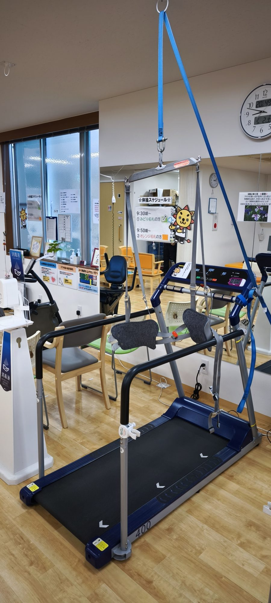
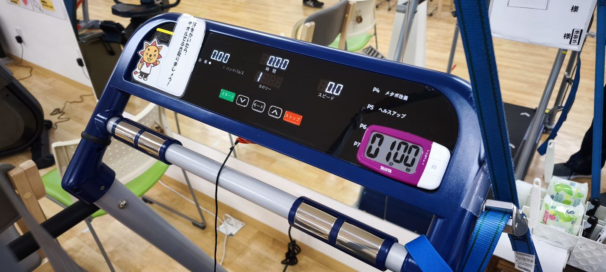

ウォーキングマシン
吊り下げ式のハーネス（ベルト）で体を支えながら、安全に歩行練習を行います。体を起こした正しいフォームでの歩行獲得を目指します。
「吊具の真下で、体を起こして歩く」が最重要ポイント
天井の吊りポイントからベルトが真下に来ていれば、体が起きた正しい姿勢で歩けています。前のめりになっていないか常に確認しましょう

📸 天井の吊りポイントからハーネスで体を支えて歩行します
✅ 何に効く？
- ハーネスで体を支えるため、転倒の心配なく歩行練習ができる
- 体を起こした正しい姿勢での歩行パターンを身につける
- 足を後ろへ送る動きを引き出し、前後の歩幅を改善する
- 心肺機能を鍛え、体力をつけるトレーニングになる
- バランスよく歩くことで、足腰全体の筋肉に効くトレーニングになる
第一段階：スタートまで
🪢 ベルトの装着（5ステップ）
1
両手を通して背面ベルトを締める
吊ってあるベルトに両手を片方ずつ通し、背面のベルトを2段階で締める。ここは特にしっかりと締めることを意識する
2
引き上げ紐を引く
ベルトを締めたら、脇にある「ベルトを引き上げるための紐」を引っ張り上げる
3
ロックをかける
引き上げた後、ロックをかける場所に指を引っ掛けて引き出す
4
固定を確認する
ベルトを上から下に向かって下ろすようにして、確実に固定されているかを確認する
5
もう一度締め直す
引き上げの際に少し緩みが出るため、最後にもう一度、背面ベルトを2段階でしっかり締め直す

📸 操作パネル：緑がスタート、赤がストップ。∨∧ボタンで速度を調整します
▶️ 起動と速度調整
1
スタート
利用者に正面を向いてもらい、スタートボタンを押す
2
0.2から少しずつ上げる
速度0.2からスタートし、0.1刻みでゆっくりと上げていく
3
名札の裏の設定値まで調整
利用者の名札の裏に速度設定が記載されているので、その数値まで調整する
4
声かけと確認
「足元が動くので、ゆっくり歩いていってください」と声かけをする。目標の数値に到達したら、利用者がしっかりと前を向いて歩けているかを確認する
第二段階：フォームの確認
👀 歩いているフォームの確認（4ポイント）
1
吊具の真下にいるか
天井の吊りポイントからベルトが真下に来ているかを確認する。体が起きて吊具の真下で歩けていないと、前のめりの歩行になっている
2
姿勢と視線
体を起こして、視線が正面を向いているかを確認する。理想は頭も起きていることだが、頭下がりの症状や強い猫背がある方には、そこまで強く求めなくてよい
3
足の前後の歩幅
体を起こして歩けていることを前提に、足が前後に開けているかを確認する。体の垂直線よりも後ろ足が後ろへ行くことが必要。ただし利用者への説明はシンプルに「ついた足が体の真下を通り過ぎるまで、ゆっくり歩いてください」でよい
4
足を「後ろに送る」意識づけ
足を前に出させるより、体を起こして足をしっかり後ろに送るよう促す。足が後ろに残ることで前後の歩幅が出て、正常な歩行に近づく。どうしても足が前に出ない方には「足を上に持ち上げる」意識を持ってもらうとスムーズ
💬 声かけ例
スタート時
「足元が動くので、ゆっくり歩いていってください」
歩幅を引き出す
「ついた足が体の真下を通り過ぎるまで、ゆっくり歩いてください」
下を向いてしまう方へ（足が動けている場合）
「そのまま前を向けると、もっと良い歩きになりますよ」
🔧 うまくいかない時の対応
1
速度で調整する
基本は速度を落として対応する。ただし、不自然に足を浮かせる時間が長い方は、むしろ速くすることで改善できる場合もある。判断に迷う場合は機能訓練指導員に確認する
2
実施のタイミング
歩く格好は平行棒の「基本歩行」に近い形。理想は平行棒が終わった後に行う方が良い結果が出やすいが、フロアの流れ次第で先にウォーキングを行っても構わない
3
下を向いてしまう方への対応
「前を向いて」と強く言いすぎず、まず下を向いていても足の動きがしっかりしているかを確認する。足が動いているなら前向きな声かけでよい。足元もおぼつかない場合は適性がない可能性もあるため、吊り位置に体があるか・足が前後に開けているかを再確認する
⚠️ 注意点
- 背面ベルトは「2段階で締める→引き上げ→締め直し」まで必ずセットで行う
- 速度は必ず名札の裏の設定値を確認する。自己判断で大きく変えない
- 痛みを伴う場合は、速度を落とすか中止を検討する
- 判断に迷う場合は、必ず機能訓練指導員に確認する
💡 現場のポイント
この歩行は平行棒の「基本歩行」と同じフォームが土台です。体を起こして、足を後ろへ送る——迷ったらこの2点に立ち返りましょう。前のめりになっていたら、まず吊具の真下に体があるかを確認してください。